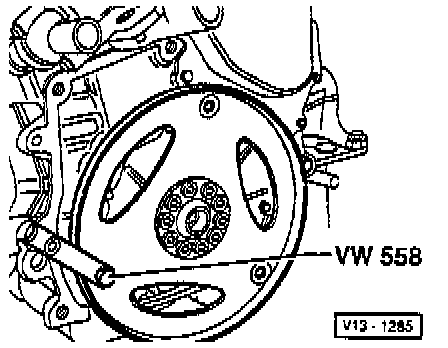

Flex Plate: Service and Repair
REMOVAL
1. Attach counter-hold tool No. VW 558, or equivalent, to the drive plate with a suitable 8 x 45 mm hex bolt.
2. Place two 10 mm nuts between counter-hold tool and drive plate.
3. Position of counter-hold tool.
INSTALLATION
1. Orient drive plate and packing plate using recesses -1-.
2. Install used bolts and tighten to: 30 Nm (22 ft. lbs.).

3. Check dimension -a- at three points and calculate average must be between 15.7 - 16.5 mm (0.606 - 0.650 in).
4. If specification not obtained:

- Remove drive plate again and install shim -1-.
- Tighten bolts to: 30 Nm (22 ft. lbs.).
5. When dimension specifications are obtained, install new bolts and tighten to: 60 Nm (44 ft. lbs.) and then turn an additional 90° (1/4 turn).